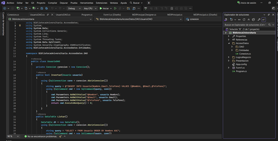

Hola, Soy Dylan Jaramillo
Estudiante de Ingeniería en Informática | Ciberseguridad
Interesado en seguridad informática y desarrollo de software. Cuento con conocimientos en análisis de redes, sistemas Windows y Linux, programación y bases de datos. Actualmente enfocado en desarrollar proyectos prácticos que fortalezcan mis habilidades en análisis de seguridad, investigación técnica y resolución de problemas.
Sobre mí
Soy estudiante de Ingeniería en Informática interesado en ciberseguridad, análisis de redes y seguridad defensiva. Me gusta desarrollar proyectos prácticos y documentar hallazgos técnicos.
Proyectos

Sistema de Gestión de Biblioteca
Aplicación desarrollada en C# con arquitectura en capas para la gestión de libros y usuarios.
Habilidades
C#
SQL
Redes
Nmap
Seguridad
Linux
Contacto
Email: dylanjaramillo70@gmail.com